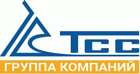

Видео

MITEX 2026 · Россия · Стенд 8F202
ТСС ГК
Карточка проверена 10 ноября 2026, 09:25 · Источник ↗ · Снимок оригинальной карточки ↗
О компании
Группа компаний ТСС - крупнейший производитель и поставщик дизельных электростанций, бензиновых генераторов, строительного оборудования, сварочного оборудования на территории России. С 1993 года успешного опыта, более 30 000 квадратных метров производственного комплекса и складов, сотни квалифицированных сотрудников - сильный аргумент для выбора ГК ТСС в качестве надежного партнера и поставщика.
Контакты
Все контактные сведения из карточки
Контакты Головной офис в Москве Телефон: +7(495)258-00-20 E-mail: info@tss.ru Адрес: Россия, Проезд Ольминского, 3 Производственный комплекс ГК ТСС Телефон: +7 (495) 258-00-20 Адрес: Россия, Московская область, Ивантеевка, Санаторный проезд д.1 корп. 1 Веб-сайт: http://tss.ru/ E-mail: info@tss.ru Телефон: +7(495)258-00-20
Все рубрики участника
Mitex - Рубрикатор
- 2. Садовая техника, инструмент, инвентарь, оборудование, расходные материалы и насосы
- 3. Сварочное оборудование, расходные материалы, СИЗ
- 6. Инструменты и оборудование для обработки и резки металла, проволоки, труб, камня, стекла, керамики, пластмасс, дерева
- 9. Компрессоры, генераторы, силовая техника
Зал
- Зал № 8
Участник выставки
- MITEX
Фотографии и изображения


Видео, каталоги и документы
Материал компании
Строительное оборудование_ТСС_2024_10_03_1.3_compressed.pdf
Открыть у участника ↗Источник не удалось загрузить при сборе. Проверьте оригинальную ссылку.
Материал компании
22_06_2023_Каталог EVO print_compressed.pdf
Открыть у участника ↗Источник не удалось загрузить при сборе. Проверьте оригинальную ссылку.
Материал компании
ДГУ_2024_10_07_1.2_compressed.pdf
Открыть у участника ↗Источник не удалось загрузить при сборе. Проверьте оригинальную ссылку.
Материал компании
Портативные генераторы_2024_10_03_1.0_compressed.pdf
Открыть у участника ↗Источник не удалось загрузить при сборе. Проверьте оригинальную ссылку.
Видео
TSS_intro_2023.mp4
Открыть у участника ↗Материал компании
Корпоративная презентация_2024_01_12_0.1_Ru_compressed.pdf
Открыть у участника ↗Источник не удалось загрузить при сборе. Проверьте оригинальную ссылку.
Каталог продукции участника
Материалы каталога
Каталоги продукции ТСС Видео о ГК ТСС Корпоративная презентация ГК ТСС
Материалы каталога
Каталоги продукции ТСС В этом разделе вы можете скачать и посмотреть каталоги продукции, выпускаемой под брендом ТСС по следующим направлениям: Дизельные электростанции Портативные генераторы Строительное оборудование Сварочное оборудование Строительное оборудование ТСС Сварочное оборудование TSS EVO Дизельные электростанции ТСС Бензиновые и дизельные генераторы ТСС
Строительное оборудование ТСС
Строительное оборудование ТСС Каталог строительного оборудования ТСС включает в себя следующие позиции - виброплиты и вибротрамбовки, мотопомпы, отбойные молотки и коперы, заглаживающие машины, станки для резки и гибки арматуры. Это проверенные временем модели и новинки 2024/25 годов. Вложения Строительное оборудование_ТСС_2024_10_03_1.3_compressed.pdf 10.10.2024 0 3.15 MB
Сварочное оборудование TSS EVO
Сварочное оборудование TSS EVO Представляем вашему вниманию сварочное оборудование, выпускаемое под СТМ TSS EVO для следующих видов сварки: ММА, MIG/MAG, TIG. Вложения 22_06_2023_Каталог EVO print_compressed.pdf 10.10.2024 1 9.47 MB
Дизельные электростанции ТСС
Дизельные электростанции ТСС В портфолио ГК ТСС представлено несколько линеек дизельных электростанций на базе двигателей отечественных и импортных производителей. Диапазон мощностей ДЭС, предлагаемых нами от 8 до 2200 кВт. Вложения ДГУ_2024_10_07_1.2_compressed.pdf 10.10.2024 0 2.39 MB
Бензиновые и дизельные генераторы ТСС
Бензиновые и дизельные генераторы ТСС Компания ГК ТСС уже 30 лет является поставщиком надежных портативных бензиновых и дизельных генераторов для бытового и промышленного применения. Наши специалисты имеют богатый опыт в оптимальном подборе портативного генератора для обеспечения энергоснабжения объекта любой сложности. ГК ТСС направляет свои усилия на поддержание максимально высокого уровня качества, как продукции, так и комплекса сопутствующих услуг по монтажу, сервису и обслуживанию, осуществляя взаимодействие с потребителями. Бензиновые и дизельные генераторы для резервного энергоснабжения. Модельный ряд портативных генераторов ТСС представлен в самом широком диапазоне, от 1 кВт до 17 кВт. В модельном ряду всегда есть генераторы: • Для резервного электроснабжения • Для работы вдали от стационарных электросетей • Открытого типа и в шумозащитном кожухе • С ручным и электрическим запуском • С блоками автоматического ввода резерва • Компактные генераторы инверторного типа • С выходным напряжением 230В или 400В • Дизельные и бензиновые • С функцией дуговой сварки • С дополнительными штангами освещения Вложения Портативные генераторы_2024_10_03_1.0_compressed.pdf 10.10.2024 0 5.17 MB
Видео о ГК ТСС
Видео о ГК ТСС Вложения TSS_intro_2023.mp4 10.10.2024 0 108.96 MB
Корпоративная презентация ГК ТСС
Корпоративная презентация ГК ТСС Вложения Корпоративная презентация_2024_01_12_0.1_Ru_compressed.pdf 10.10.2024 2 3.21 MB
Последние публикации в Telegram
До десяти последних сообщений каждого найденного канала. Оригинал открывается по ссылке.

#Кейс_ТСС : Резервное питание для горного отеля — 500 кВт в контейнере «Север» Коллеги-проектировщики, этот проект будет вам интересен — особенно если вы работаете с…

ГК ТСС на Weldex 2026: автономные сварочные решения на стенде А6003! С 6 по 9 октября ждём вас на 25‑й международной выставке Weldex в «Крокус…

«Сотка» на Weichai: разбираем, пожалуй, самую популярную станцию ТСС В новом видео — ДЭС мощностью 100 кВт с двигателем Weichai . Показываем, что внутри и…

От сборки до пусконаладки: как создаются ДЭС для распределительных центров сети дискаунтеров Сегодня мы на производственном комплексе ГК ТСС в Ивантеевке — отсюда начинается путь…

Новый объект с надежным резервом от ГК ТСС: дизельная электростанция для ЖК «Родные кварталы» Мы выехали на реальный объект — жилой комплекс класса «Комфорт+», где…

Новый обзор: ДЭС ТСС Prof 150 кВт на двигателе Weichai ⚡️ Продолжаем наш цикл видео-обзоров о дизельных электростанциях ТСС. Сегодня говорим о станции серии Prof…

Расширенная линейка ДЭС TSS Prof на двигателях Weichai — теперь до 400 кВт! ⚡️ Мы расширяем складскую программу серии TSS Prof: к привычным мощностям 20–80…

🛑 Что случится в современном ЖК, если пропадёт электричество? Представьте: вечер. Вы возвращаетесь домой после работы. Заходите в подъезд — темно. Лифт не работает. Ваша…

🔋 Мощный резерв для вашего бизнеса! Представляем новое видео о дизельной электростанции мощностью 800 кВт с резервом до 880 кВт — готовое решение для энергобезопасности…

🚀 Новая станция ТСС 108 кВт на базе Cummins — уже в обновлённом дизайне! Каждая третья ДЭС в России мощностью до 300 кВт — это…